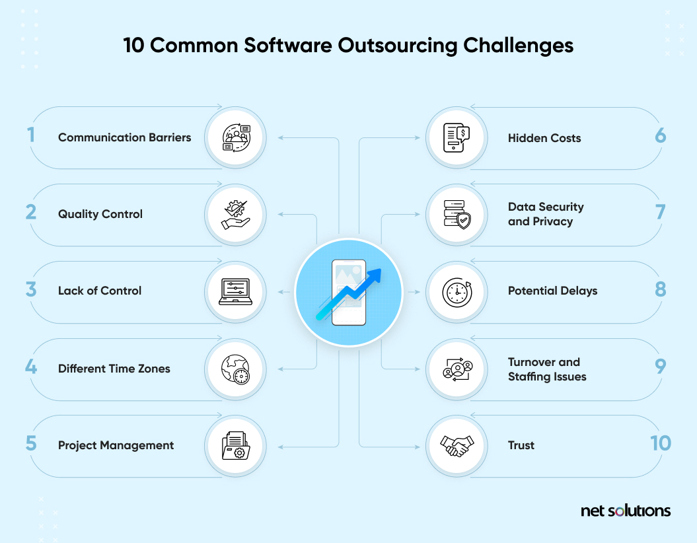

Syllabus
Explore strategies to respond to difficulties when developing a software engineering solution, including:
- looking for a solution online
- collaboration with peers
- outsourcing
Learning Intention and Success Criteria
Learning Intention - Students will:
- To explore and understand various strategies to overcome difficulties encountered in software engineering projects.
Success Criteria - Students can:
- Explain how searching for online solutions can provide quick and diverse approaches to solving problems.
- Describe how collaboration with peers can enhance creativity and improve the quality of software.
- Discuss how outsourcing can fill gaps in expertise or resources, and how to manage its associated risks.
Content
When developing software, challenges are inevitable, whether technical, resource-based, or time-related. Addressing these obstacles effectively requires a strategic approach. Three common strategies include searching for solutions online, collaborating with peers, and outsourcing tasks. Each method offers unique advantages and challenges, making it important to know when and how to apply them to ensure the success of a software engineering project.
Looking for a Solution Online
One of the first steps many developers take when faced with a problem is to look for answers online. The internet offers a wealth of information, from documentation to forums and community-driven platforms, allowing developers to tap into a global knowledge base. When used effectively, it can be a fast and reliable way to solve software-related problems.
How to Look for Solutions Online
- Technical Forums: Platforms like Stack Overflow are gold mines for software developers. These sites allow users to post detailed questions and receive answers from experienced developers around the world.
- Official Documentation: This is often the best source for solving issues related to specific technologies, languages, or frameworks. For instance, the Python, Java, and React documentations are continuously updated to reflect the latest features and bug fixes.
- Blogs and Tutorials: Many developers and organisations publish blogs, tutorials, and walkthroughs to address common and advanced issues.
- GitHub Issues and Open-Source Communities: For open-source software, GitHub’s issues page can be helpful for finding previously encountered bugs or challenges. Often, community members will offer solutions or workarounds.
Advantages
- Speed: Finding solutions online can be quick, especially for common issues or bugs that others have already encountered.
- Multiple Approaches: Online sources often provide various approaches to solving the same problem, offering flexibility in how to proceed.
- Learning Opportunity: Developers not only find immediate solutions but also learn about new tools, techniques, or best practices through the process.
Challenges
- Quality Control: Not all online solutions are reliable or well-tested. A solution that works for one case may not be universally applicable, and poorly written code can introduce new bugs.
- Information Overload: With the vast amount of information available, developers may need to sift through multiple resources to find the most relevant or accurate solution.
- Over-reliance: Constantly looking for external solutions might inhibit developers from learning to solve problems independently or deeply understanding the underlying issue.
Collaboration with Peers
Collaboration among peers is essential in software engineering, particularly in complex projects where different perspectives and expertise are valuable. Teamwork can lead to more creative problem-solving and faster identification of errors. The shared knowledge of a group often surpasses that of an individual developer.
How to Collaborate Effectively
- Pair Programming: A collaborative practice where two developers work on the same code at the same time. One writes the code while the other reviews it in real-time, which leads to fewer errors and a more immediate exchange of ideas. This method is particularly useful for debugging and refining code.
- Code Reviews: Before merging code into the main codebase, peers review it for potential errors, inefficiencies, or improvements. Code reviews not only catch bugs but also improve the overall quality of the code and promote team learning.
- Stand-up Meetings & Brainstorming Sessions: These regular team meetings, often part of Agile or Scrum methodologies, allow developers to share their current challenges and brainstorm solutions. By sharing difficulties openly, teams can address issues early and get multiple perspectives on the best path forward.
Advantages
- Shared Expertise: Peers bring different levels of experience and specialisations, which can lead to better solutions for complex problems.
- Creativity: Collaborative environments promote creative problem-solving as different viewpoints come together.
- Fewer Bugs: With multiple sets of eyes on the same code, potential errors are identified and corrected more efficiently.
Challenges
- Coordination Issues: Collaboration requires effective communication and often synchronisation of schedules, which can be difficult in distributed or remote teams.
- Differing Opinions: Collaboration can sometimes lead to disagreements over the best approach to a problem. Resolving these conflicts constructively is critical to maintaining team cohesion.
- Time-Consuming: Collaboration can take more time initially, especially in large teams, as consensus is reached on the best approach to take.
Outsourcing
Outsourcing involves hiring external developers or companies to handle parts of the software development process. This strategy can be useful when a project requires specialised knowledge or when the internal team lacks the resources or time to complete certain tasks. Outsourcing can range from hiring freelance developers for a single task to partnering with a dedicated development firm for long-term projects.
When to Consider Outsourcing
- Specialised Skills Needed: If a project requires expertise that the current team lacks, such as advanced AI algorithms, cybersecurity protocols, or mobile app development, outsourcing can provide immediate access to experts.
- Time Constraints: If the internal team is overloaded with tasks, outsourcing can help meet deadlines without overburdening the team.
- Cost-Effectiveness: Outsourcing can be more affordable than hiring full-time employees, especially for short-term or highly specialised tasks.
Types of Outsourcing
- Freelancers: Hiring independent contractors can be useful for small, well-defined tasks.
- Dedicated Teams/Agencies: Larger agencies can be engaged for long-term projects or more comprehensive tasks such as developing an entire module or application.
- Offshore or Nearshore Development: Companies can outsource tasks to international teams, often in countries with lower labour costs, which can be financially beneficial but requires careful communication management.
Advantages
- Access to Expertise: Outsourcing allows companies to access specialised skills and technologies that might not be available in-house.
- Scalability: Outsourcing provides flexibility to scale teams up or down based on project needs without the overhead costs associated with hiring full-time staff.
- Focus on Core Competencies: Outsourcing routine or highly specialised tasks allows the internal team to focus on the core aspects of the project.
Challenges
- Communication Barriers: If the outsourced team is in a different time zone or speaks a different language, communication can become a challenge, potentially leading to misunderstandings.
- Quality Control: Ensuring that the quality of outsourced work meets project standards requires detailed documentation and frequent checks.
- Security Risks: Outsourcing may involve sharing sensitive data or proprietary information with external parties, introducing potential security vulnerabilities.

Theory
- Direct the students to an activity to be completed in their OneNote
Practical
- Provide instructions for a practical activity or direct the students to an EdStem activity